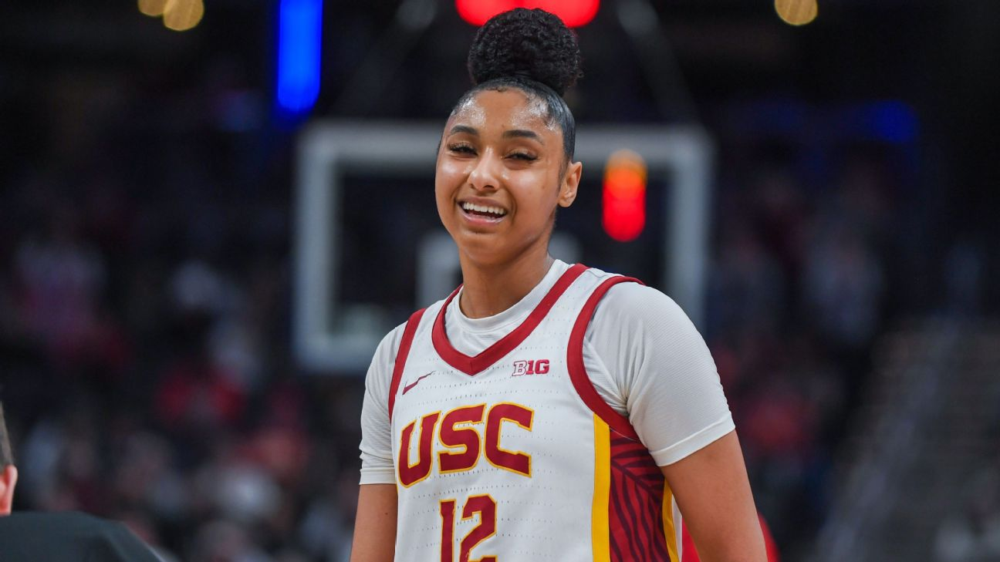
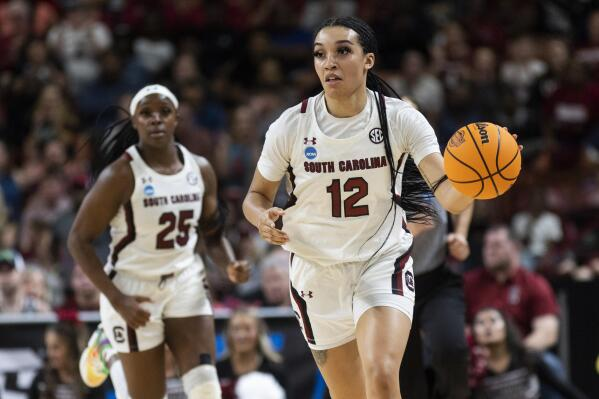
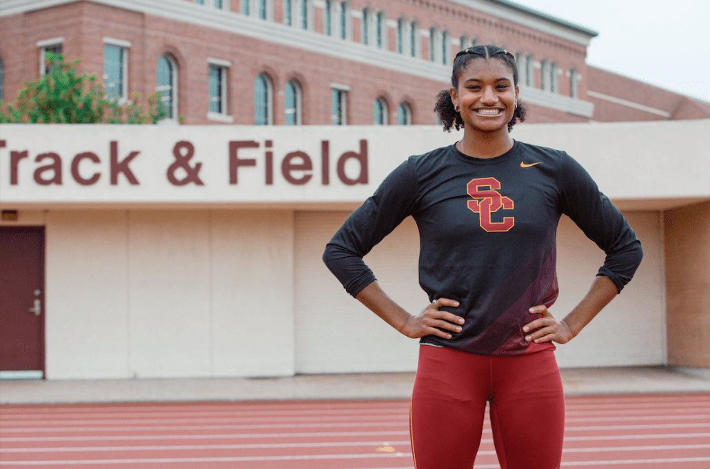
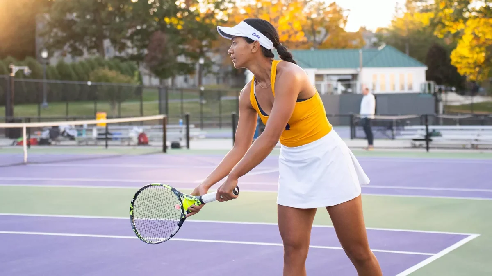
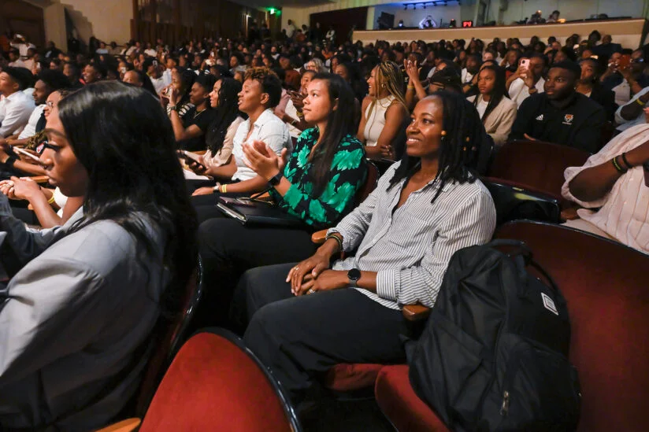
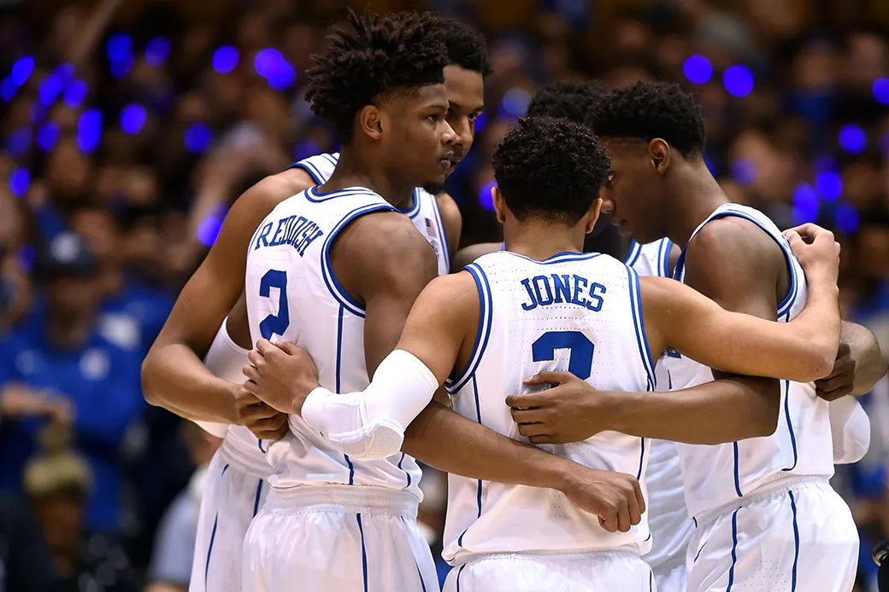
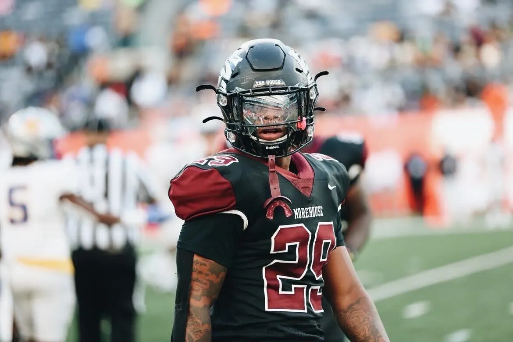
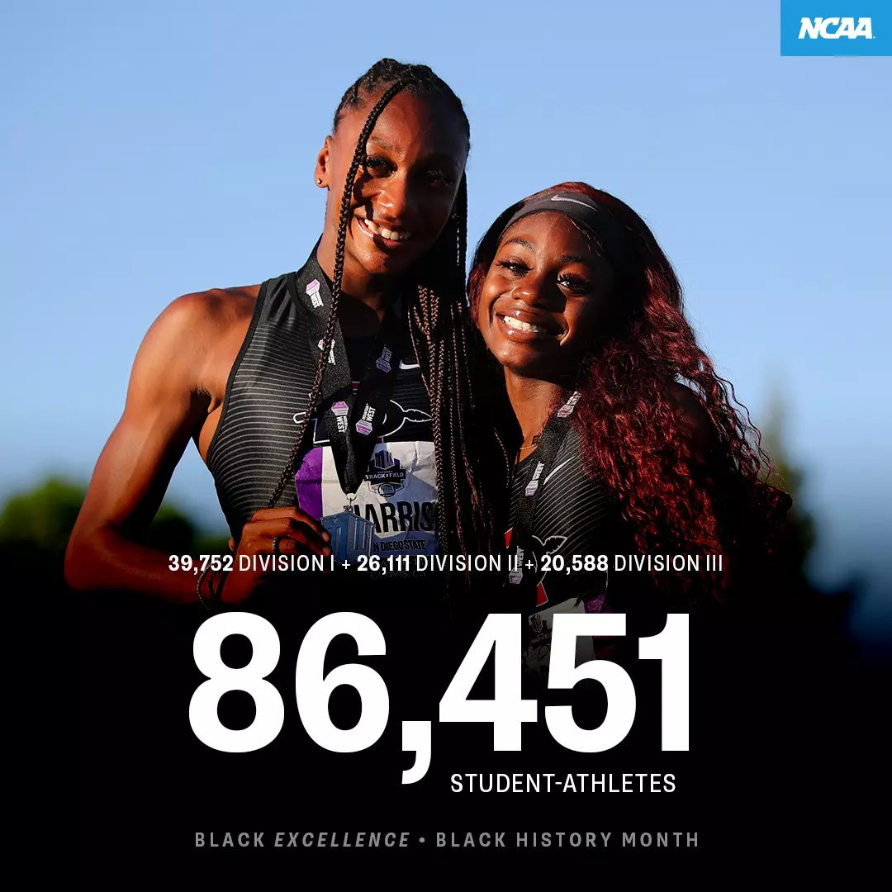

A video about the experiences of Black student-athletes at predominantly white institutions.

JuJu Watkin USC Trojans women's basketball (#12 / Guard)

South Carolina senior guard Brea Beal

Anna Cockrell – Olympic silver medalist in 400m hurdles (2024)

Ayanna Varma Women's Tennis - Williams College

2023 Black Student Athlete Summit on the USC University Park Campus

Five players on the Duke University men's basketball team

Ronald Davis II - student athlete at Eastern Washington University

Record-high participation by Black student-athletes in NCAA Division I,II,III sports
"The systemic racism that exists in the college sport industry has been recognized for decades by the players themselves, coaches, journalists, and scholars. Numerous scholars have concluded that Black college athletes as a group often experience educational neglect due to a range of issues including the lack of adequate academic learning support, practices associated with maintaining athlete eligibility rather than academic advancement, academic clustering, and limitations placed on course selections and academic majors (Beamon, 2008, 2012; Benson, 2000; Garcia & Maxwell, 2019; Smith & Willingham, 2015). Black athletes competing on teams at majority White institutions face being negatively stereotyped as superhuman because of their athletic talent. They are expected to endure physical pain and harms without complaint while being viewed as intellectually inferior (Cooper, 2018). Antiblack racism on college campuses and the racial climate in which college football and basketball players operate has had a detrimental effect on their success academically (Comeaux and Grummert, forthcoming)."
| Position | Percentage White |
|---|---|
| Chancellors and presidents | 80% |
| Directors of athletics | 79% |
| Associate directors of athletics | 84% |
| Faculty athletics representatives | 82% |
| Senior woman administrators in athletic departments | 75% |
Texas A&M University, College Station, TX recruited the highest numbers of Black athletes in the nation.